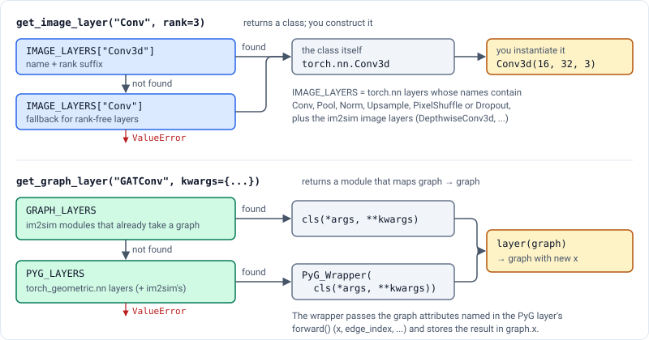
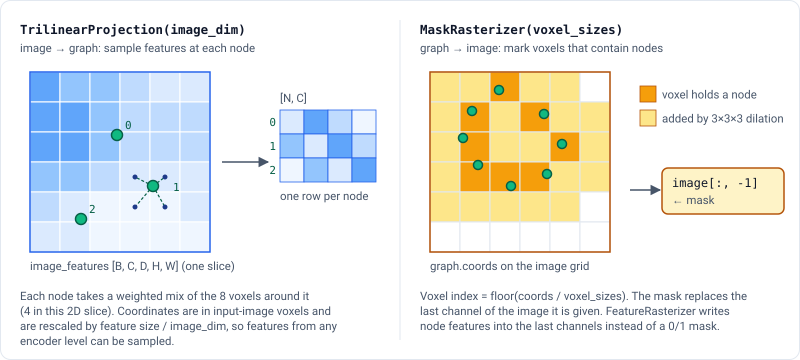

im2sim.layers#
Classes#
Dropout for channels in a graph. |
|
Conditioned Squeeze-and-Excitation [1] (SE) layer that adaptively recalibrates channel-wise feature responses based on an additional conditioning input. |
|
The default normalisation for im2sim graph blocks. |
|
Depthwise convolution layer that applies a separate convolutional filter to each input channel. |
|
Depthwise separable convolution layer that consists of a depthwise convolution followed by a pointwise convolution. |
|
Dropout for edges in a graph. |
|
Efficient Channel Attention (ECA) layer that adaptively selects important channels based on global context. |
|
Rasterizes a point cloud graph into a 3D feature image. |
|
Ghost convolution layer that generates more feature maps from cheap operations. |
|
A wrapper for activation functions to be used in graph neural networks. |
|
A configurable graph convolutional block that consists of a sequence of graph convolutional layers, normalization layers, dropout layers, and attention layers. |
|
Dropout for graph data, including node dropout, edge dropout, and channel dropout. |
|
Efficient Channel Attention (ECA) for graph data. |
|
Squeeze-and-Excitation (SE) for graph data. |
|
A configurable image convolutional block that consists of a sequence of convolutional layers, normalization layers, dropout layers, and attention layers. |
|
Rasterizes a point cloud graph into a 3D mask image. |
|
Dropout for nodes in a graph. |
|
Squeeze-and-Excitation (SE) layer that adaptively recalibrates channel-wise feature responses. |
|
TrilinearProjection layer projects image features onto graph coordinates using trilinear interpolation. |
Functions#
Guide#
layers provides the building blocks that im2sim models are made from:
configurable blocks:
ImageConvBlockfor images andGraphConvBlockfor graphs;custom layers such as depthwise and ghost convolutions, channel attention and graph dropout;
bridges between the two domains:
TrilinearProjection(image to graph),MaskRasterizerandFeatureRasterizer(graph to image).
Blocks#
A block is a stack of depth layers. Each layer runs these steps in order:
a convolution;
normalisation;
dropout, if the layer number is in
dropout_position;attention: on the last layer, or before a residual connection;
the activation.
Residual connections are applied between layers. The block’s config (see im2sim.configs) chooses every one of these parts. The block itself takes only the channel counts and, for images, the spatial rank:
from im2sim.configs import ImageConvBlockConfig, LayerConfig
from im2sim.layers import ImageConvBlock
cfg = ImageConvBlockConfig(
depth=3,
activation="ReLU",
conv_cfg=LayerConfig(name="Conv", kwargs={"kernel_size": 5, "padding": "same"}),
norm_cfg=LayerConfig(name="BatchNorm", kwargs={"affine": True}),
).add_se()
block = ImageConvBlock(in_channels=16, out_channels=32, rank=3, cfg=cfg)
y = block(x) # x: [B, 16, D, H, W] -> y: [B, 32, D, H, W]
Graph blocks work the same way, but take and return a torch_geometric.data.Data object. They
replace graph.x and keep edge_index and every other attribute:
from im2sim.configs import GraphConvBlockConfig, LayerConfig
from im2sim.layers import GraphConvBlock
cfg = GraphConvBlockConfig(
depth=2,
hidden_channels=64,
conv_cfg=LayerConfig(name="GATConv", kwargs={"heads": 1}),
)
block = GraphConvBlock(in_channels=16, out_channels=32, cfg=cfg)
graph = block(graph) # graph.x: [N, 16] -> [N, 32]
The two blocks differ in a few ways:
|
|
|
|---|---|---|
Channels between layers |
always |
|
Activation after the last layer |
yes |
no (only |
Default convolution |
|
|
Default residual type |
|
|
For image blocks, norm_cfg.name must be "BatchNorm", "InstanceNorm" or None, and
attn_cfg.name must be "SqueezeExcite", "EfficientChannelAttn" or None.
How layer names are resolved#
The name in a LayerConfig is looked up in a registry when the block is built. Image and
graph layers use different registries, which live in im2sim.utils.layer_util (see
im2sim.utils).

The rules that follow from this:
Image layer names never include the rank.
"Conv"becomesConv2dorConv3d, and"BatchNorm"becomesBatchNorm2dorBatchNorm3d.Any
torch_geometric.nnlayer whose name containsConv,Pool,NormorDropoutcan be used in a graph block by name, for example"GATConv","SAGEConv"or"GraphNorm". A wrapper passes it the graph attributes it asks for (x,edge_index,edge_attr, …) and stores the result ingraph.x. PyG layers that return more than one tensor are not supported.Lookups ignore case, spaces and underscores, so
"batch_norm"finds"BatchNorm".
Adding your own layer#
Register a module under a name and it can be used in any config. A graph layer must take and return a graph:
import torch
from im2sim.configs import GraphConvBlockConfig, LayerConfig
from im2sim.utils.layer_util import register_graph_layer
@register_graph_layer(name="LinearGraphLayer")
class LinearGraphLayer(torch.nn.Module):
def __init__(self, in_channels, out_channels):
super().__init__()
self.linear = torch.nn.Linear(in_channels, out_channels)
def forward(self, graph):
graph.x = self.linear(graph.x)
return graph
cfg = GraphConvBlockConfig(conv_cfg=LayerConfig(name="LinearGraphLayer", kwargs={}))
Image layers are registered with register_image_layer. Blocks construct the convolution
layer as layer(in_channels=..., out_channels=..., **kwargs), so a custom convolution must
accept those two keyword arguments.
Moving between images and graphs#
Image-to-graph models need to move information both ways. TrilinearProjection samples
an image feature map at each node, and MaskRasterizer draws the nodes back into an
image.

from im2sim.layers import MaskRasterizer, TrilinearProjection
projection = TrilinearProjection(image_dim=128)
node_features = projection(image_features, graph) # [N, C]
rasterizer = MaskRasterizer(voxel_sizes=(1.0, 1.0, 1.0))
image = rasterizer(graph, image) # last channel replaced by the mask
Both read graph.coords and graph.batch:
coordsare in voxel units of the full-resolution input image.image_dimis that image’s size, so a projection works with feature maps at any resolution. The scale factor is taken from the first spatial axis and applied to all three, so the image should be cubic.MaskRasterizerconverts coordinates to voxel indices withfloor(coords / voxel_sizes), marks those voxels, dilates the mask with a 3×3×3 kernel to close gaps, and writes it into the last channel of the image it is given.FeatureRasterizerwrites node features into the last few channels instead.